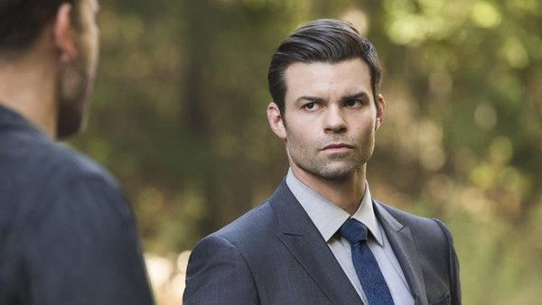

Elijah es el mayor de sus hermanos con vida, sin contar a Freya, que más tarde se descubre que está viva. Es el hijo de Mikael y Esther y su mayor objetivo es ayudar a su hermano Niklaus a encontrar la redención. Como su madre era bruja, él nació siendo brujo, aunque nunca desarrolló su poder, pero al transformarse en vampiro dejó de ser brujo, ya que no se puede ser vampiro y brujo a la vez. Es conocido como vampiro original y el hermano honorable. Elijah no tolera a las personas que no cumplen su palabra o que lo traicionan. Él siempre cumple su palabra, aunque siempre trata de encontrar un punto flaco, como se puede ver en uno de los primeros capítulos de The Originals cuando le promete a Sophie que Klaus no matará a Agnes, ambas brujas, y la mata él, técnicamente cumplió su palabra ya que su hermano no la mató. Antes de convertirse en vampiro él y Klaus estaban enamorados de una Doppelgänger Petrova llamada Tatia, la cual asesinó accidentalmente tras convertirse en vampiro, ya que no sabía controlar su sed de sangre. Tras esto él quedó traumatizado y su madre le dijo que ocultara todos detrás de una “puerta roja” en su mente, que se limpiara y que mientras estuviera limpio nada de lo que guardaba en la “puerta roja” podría dañarlo. Este fue el mecanismo de defensa que utilizó Elijah para enfrentarse a las atrocidades que como vampiro había cometido durante los siguientes mil años. En el siglo XV tuvo una relación sentimental con otra Doppelgänguer Petrova, Katerina Petrova, una joven de Bulgaria. Con la que, más tarde, en el siglo XXI volvió a reavivar su relación, hasta que la cortó para irse a ayudar a su hermano a Nueva Orleans. Ya allí Elijah desarrolla sentimientos por Hayley, después de dar su palabra prometiendo protegerla a ella y al bebé. Elijah elegía a las personas que convertía en vampiro por su inteligencia y estos acabaron creando una organización llamada Los Strix, que tenían como líder a Tristán de Martel el primer humano convertido por Elijah.